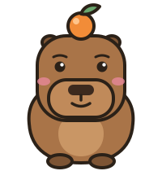

Practica una tabla
Tu mapa de las tablas
Gris: todavía no la ves · Rojo: te cuesta · Amarillo: casi · Verde: ¡la dominas! Toca una casilla para ver el truco.
7 × 8
=
?
⭐⭐⭐
Un repaso que se acuerda de lo que te cuesta y te lo pregunta más.

Gris: todavía no la ves · Rojo: te cuesta · Amarillo: casi · Verde: ¡la dominas! Toca una casilla para ver el truco.